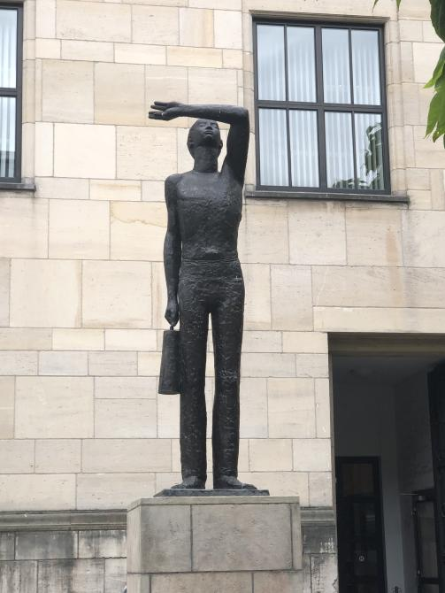

Mijnverleden Heerlen

Beschrijving
Groot beeld (3 m hoog) van een mijnwerker, die zijn ogen beschermt tegen het felle licht bij het bovenkomen. Het is een hommage aan de mijnwerkers.
Gesigneerd
leiden, rijnlandsche kunstgieterij.
Kunstenaar
François M.G.H. (Frans) Gast (Maastricht 1927 - Maastricht 1986), beeldhouwer en tekenaar (Wikipedia - RKD-database).